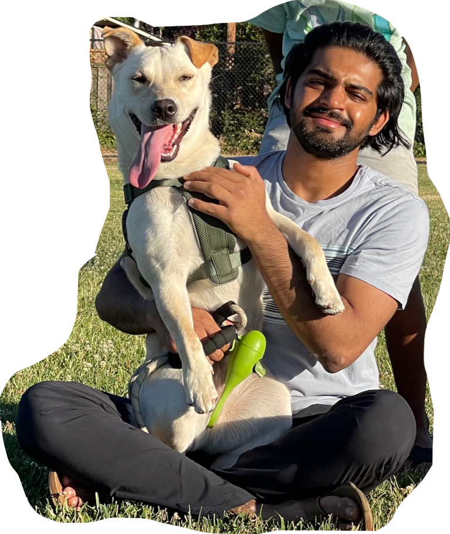

Hey! I'm Atharva
(and that's Sheru 🐶)
I'm a data scientist and recent grad from UCSD with a double major in Data Science & Economics.
I'm currently based in San Diego, California 🌴.
I'm currently a Data Science Consultant at
Estuate ,
helped stop email threats using ML at
Proofpoint
, have served as the President of the
Data Science Student Society @ UCSD
(CA's largest data science student org), worked on
finding solutions to refractory epilepsy using data science and bioinformatics tools, and
conducted fraud detection in graph networks using ML
(See projects
for more).
Offline, I like to make good food, watch cricket 🏏
and motorsports 🏎️, and explore the outdoors 🛶.
📎 Using Arc? Click me!
atharva.kul2001@gmail.com